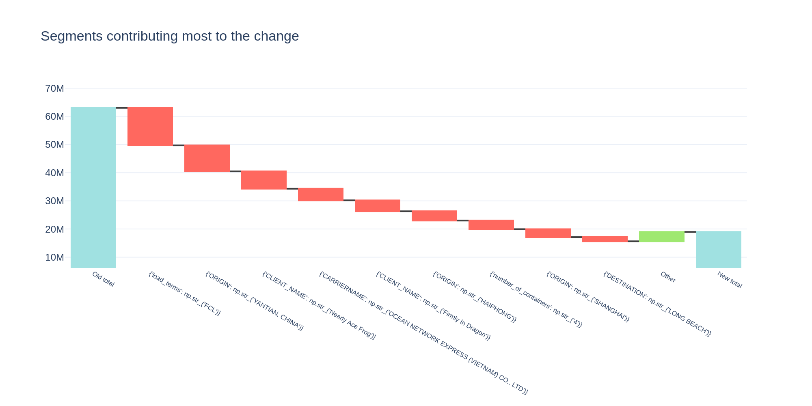
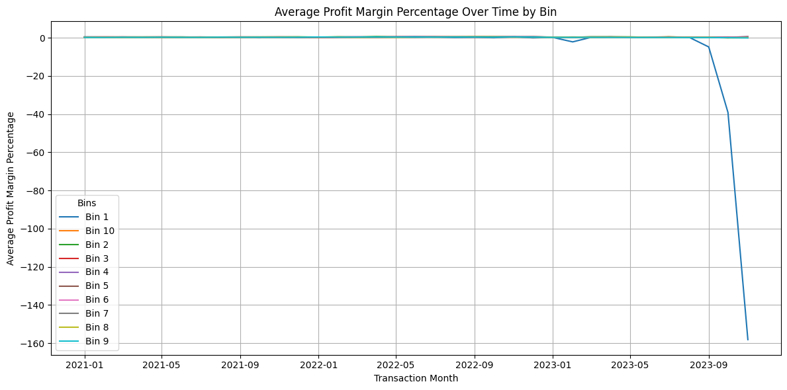
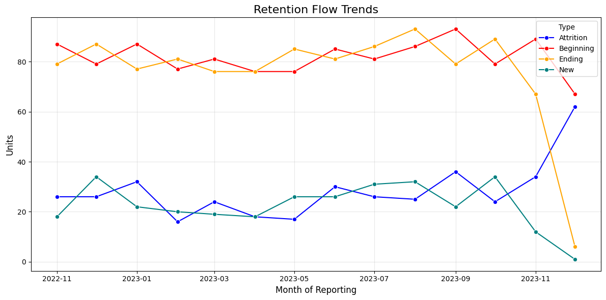

Case study · Notebook
Three tables, no data dictionary
A freight forwarder’s raw extracts — shipments, containers, customers — handed over with zero documentation and a time box. This notebook is the full arc: build a local DuckDB sandbox, profile every column, untangle the keys, assemble one big table, and walk out with revenue drivers, margin structure, and retention health.
The notebook
The analysis, step by step
Step 1 — a warehouse sandbox that costs nothing
The extracts came out of Snowflake, but exploration shouldn’t burn warehouse credits or scan quotas. The CSVs load into an in-memory DuckDB instance, which speaks close-enough SQL and keeps every query local and reproducible.
load CSVs into DuckDB
import duckdb
conn = duckdb.connect()
conn.execute("CREATE TABLE containers AS SELECT * FROM read_csv_auto('data/CONTAINERS.csv')")
conn.execute("CREATE TABLE customers AS SELECT * FROM read_csv_auto('data/CUSTOMERS.csv')")
conn.execute("CREATE TABLE files AS SELECT * FROM read_csv_auto('data/FILES.csv')")
Step 2 — profiling queries written by a function, not by hand
Instead of hand-writing summary statistics for every column, a helper parses each table’s Snowflake CREATE TABLE DDL and generates the profiling SQL — counts, distincts, null rates, min/max per column — so the same pattern scales to any number of tables. A one-line ProfileReport cross-checks the findings.
DDL → profiling SQL generator
def construct_profiling_query_from_table_def(table_def):
"""Constructs a profiling SQL query from a Snowflake CREATE TABLE definition."""
column_pattern = re.compile(r"(\w+)\s+([\w\(\),]+)", re.IGNORECASE)
columns = column_pattern.findall(table_def)
for column_name, column_type in columns:
# per column: COUNT, COUNT DISTINCT, null count, null %,
# and MIN/MAX for dates, numerics, and string lengths
...
models = [
{"model_name": "containers", "table_def": "create or replace TRANSIENT TABLE CONTAINERS (...)"},
{"model_name": "customers", "table_def": "..."},
{"model_name": "files", "table_def": "..."},
]
print(generate_profiling_queries(models))
Step 3 — key forensics
Profiling surfaced the real schema: global_file_id is a true primary key on files; containers carries duplicate rows and NULL container ids; and the two key relationships have orphans in both directions — customers who ship but aren’t in customers, and customers with no shipments at all. Duplicate container records get resolved by keeping the most frequent value per feature, collapsing the table to one row per shipment before any join.
duplicate resolution — most frequent feature per column
WITH cte_feature_count AS (
SELECT global_file_id, load_terms, vessel, voyage, quantity, teu,
COUNT(*) AS feature_frequency
FROM containers
GROUP BY 1, 2, 3, 4, 5, 6
),
ranked AS (
SELECT *, ROW_NUMBER() OVER (
PARTITION BY global_file_id
ORDER BY feature_frequency DESC
) AS rank
FROM cte_feature_count
)
SELECT * FROM ranked WHERE rank = 1
Step 4 — one big table, then insights
With keys validated and containers reduced, a three-way join builds the OBT that all downstream analysis runs on. First question for any business: what moved revenue? wise-pizza with a lasso solver decomposes the 2022→2023 net-revenue change into the segments that attracted or detracted the most.
lasso revenue-driver decomposition
iteration1 = explain_changes_in_totals(
df1=pre_data, # 2022 feature matrix
df2=data, # 2023 feature matrix
dims=['PRODUCT', 'CARRIERNAME', 'DESTINATION', 'ORIGIN',
'CLIENT_NAME', 'VERTICAL', 'load_terms', 'quantity',
'number_of_containers'],
total_name='net_revenue_total',
size_name='transaction_total',
max_depth=1, max_segments=10,
how='totals', solver='lasso',
)

Step 5 — margin structure by transaction size
Binning transactions into revenue deciles and tracking average profit margin per bin over time shows the pattern that matters for targeting: smaller orders carry the strongest margins. If revenue optimization is the question, the answer starts with identifying who those small-order customers are and winning more of them.

Step 6 — customer-base health
A month-pair SQL model classifies every customer-month into new, retained, churned, or resurrected — the standard growth-accounting view, built entirely in SQL on the OBT.

Findings → recommendations
| What the exploration found | What it means for the business |
|---|---|
| duplicate container rows | Dedup strategy needed at ingestion — resolved here by most-frequent-feature; formalize before the database scales. |
| orphans in both key directions | The customers extract is truncated; joins must be outer and metrics must state their denominator. |
| revenue drivers isolated by segment | Specific products, lanes, and verticals attract or detract revenue — account plans can start from the decomposition, not intuition. |
| margin concentrates in small orders | Target audience for revenue optimization is smaller orders: identify those contributors and engage similar segments. |
| retention flow assembled in SQL | Ready to transfer to a BI tool and slice by segment for the next round of insights. |
Source & data. The executed notebook, an anonymized ~5% customer sample (referential quirks preserved), and the sampling script are on GitHub: notebooks/supply_chain_exploration